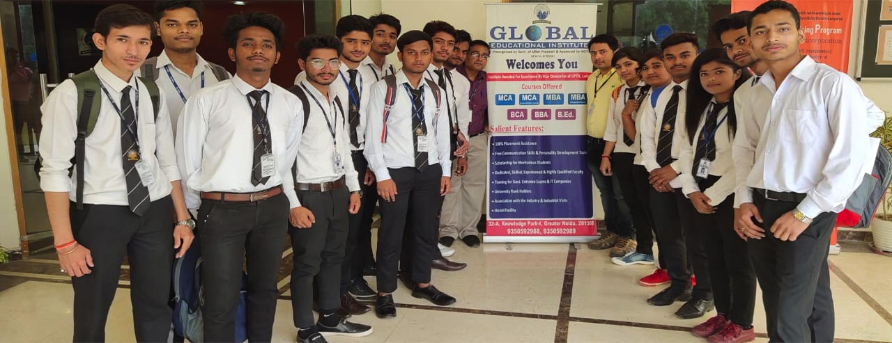

Welcome to IT FUTURE Campus ...
 IT FUTURE Campus is an innovative higher education institute in Sri Lanka, established in 1981 with the vision of ''Knowledge Drives Innovative Society'' in the education sector and offers national and international recognised programmes to the students and with their preference they would continue the stated programmes either locally or internationally.The secret of success behind this legendry institute has always been passionate people.The dedication from the bottom up hierarchy has taken IT FUTURE to greater heights during the past. At Nations Campus it is always about Innovation, Professionalism at work and Proceeding towards Excellence.
IT FUTURE Campus is an innovative higher education institute in Sri Lanka, established in 1981 with the vision of ''Knowledge Drives Innovative Society'' in the education sector and offers national and international recognised programmes to the students and with their preference they would continue the stated programmes either locally or internationally.The secret of success behind this legendry institute has always been passionate people.The dedication from the bottom up hierarchy has taken IT FUTURE to greater heights during the past. At Nations Campus it is always about Innovation, Professionalism at work and Proceeding towards Excellence.
What We Do
 IT FUTURE Campus operates with more than 54 successful subsidiary institutes , in ICT education, training & services sectors throughout the island.IT FUTURE with its broader vision & with its dedication has set step in developing an International Sri Lankan Brand to contribute towards buildinga knowledge based Society.
IT FUTURE Campus operates with more than 54 successful subsidiary institutes , in ICT education, training & services sectors throughout the island.IT FUTURE with its broader vision & with its dedication has set step in developing an International Sri Lankan Brand to contribute towards buildinga knowledge based Society.
Program Options
IT FUTURE Campus has affiliation with number of foreign universities & accredited bodies of UK & Australia, offer Higher Diploma & Undergraduates courses.
IT FUTURE Campus has diversified its activities & runs in three main faculties, and one school covering number of fields namely
- Faculty of Social Science, Humanities & Management
- Faculty of Computer Science & Engineering
- Faculty of Vocational Studies
- School of Early Learning
 Edexcel was formed in 1996 by the merger of the Business and Technology Education Council (BTEC), and the University of London Examination and Assessment Council (ULEAC). Pearson Education Limited is the United Kingdom’s largest awarding organisation which offers academic and vocational qualificationsin the United Kingdom and internationally. In terms of the academic qualifications , it awards Edexcel NVQ and BTEC from entry level to higher national diplomas.
Edexcel was formed in 1996 by the merger of the Business and Technology Education Council (BTEC), and the University of London Examination and Assessment Council (ULEAC). Pearson Education Limited is the United Kingdom’s largest awarding organisation which offers academic and vocational qualificationsin the United Kingdom and internationally. In terms of the academic qualifications , it awards Edexcel NVQ and BTEC from entry level to higher national diplomas.
Lincoln University College is one of the premier private institutions of higher education approved by the Ministry of Higher Education and Malaysian Qualifying Agency (MQA- National Accreditation Board).They bring together almost fifty years of higher education, post-secondary education and language teaching experiences to world IDM Nations Campus collaborated with Lincoln University College in 2017 delvering eight Graduate and Postgraduate programs.
Awards

- National Business Excellence 2012 / 2013 / 2014/ 2016 / 2017.
- National Business Excellence 2012 - 2013 - 2014- 2016.
- Best HND Centre in Sri Lanka 2011 / 2012 / 2013.
- British Council IELTS Partner of the year 2011 / 2012 / 2013 / 2014 / 2015 / 2016 / 2017.
- British Council IELTS Partner of the year 2011 - 2012 - 2013 - 2014 - 2015 - 2016 - 2017.
- Best Private Engineering Institute.
- IT FUTURE Campus recognized at the Global Corporate Universities Awards.
- Asian Education Leadership Awards 2013, Business School Leadership Award.
- Asian Education Leadership Awards 2013, Asia’s Best Emerging Business School Award.
- World Marketing Summit 2013 Best Educational Institute in Management Award.